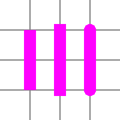
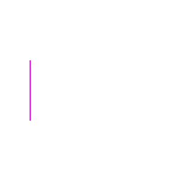
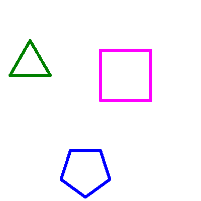

Optional options: TurtleOptionsPrivate angleThe current angle of the turtle.
Private colorThe Color object representing the current color of the turtle.
Readonly ctxThe turtle's Canvas 2D context.
Private hiddenWether or not the turtle is hidden.
Private Optional intervalThe timer identifier for the step interval.
Private penDetermines if the turtle draws on the canvas or not.
Private positionThe current X/Y position of the turtle on the canvas.
Private Optional preCanvas Image data before drawing the turtle.
Private shapeThe shape of the turtle which is drawn with the .draw method.
Represented by an array of 2D vertices (X/Y coordinates) defining the boundaries of the shape.
Optional speedThe delay in ms between each steps.
Private stepWether or not the Turtle is currently perfoming a step.
Use .inStep instead.
Private stepWether or not the Turtle is in Step by Step mode. Enabled using setDelay.
Private stepsThe queue of steps do execute.
Private widthThe current width of the turtle's drawing.
Private wrapWether or not to wrap the turtle around the canvas. The turtle goes around when overflowing.
Static Readonly captureStatic captureSets or gets the default captureRejection value for all emitters.
Static defaultStatic Readonly errorThis symbol shall be used to install a listener for only monitoring 'error'
events. Listeners installed using this symbol are called before the regular
'error' listeners are called.
Installing a listener using this symbol does not change the behavior once an
'error' event is emitted, therefore the process will still crash if no
regular 'error' listener is installed.
Private inWether or not the turtle is doing a step.
Private linePrivate doDraws a grid on the Canvas. Pretty useful to be precise.
For method chaining.
turtle.clear().drawGrid(2);
turtle.clear().drawGrid(3);
turtle.clear().drawGrid(4);
turtle.clear().drawGrid(5);
turtle.clear().drawGrid(6);
turtle.clear().drawGrid(7);
turtle.clear().drawGrid(8);
The number of separations on the grid.
Rest ...args: Parameters<TurtleEvents[U]>Returns an array listing the events for which the emitter has registered
listeners. The values in the array are strings or Symbols.
const EventEmitter = require('events');
const myEE = new EventEmitter();
myEE.on('foo', () => {});
myEE.on('bar', () => {});
const sym = Symbol('symbol');
myEE.on(sym, () => {});
console.log(myEE.eventNames());
// Prints: [ 'foo', 'bar', Symbol(symbol) ]
v6.0.0
Expose the Turtle's methods onto an object.
This is very useful for example when using it with the window object,
abstracting method calls to simple functions calls.
For method chaining.
Any JavaScript Object
Optional remap: ExposeRemapA remap object to remap method's names
Makes the turtle walk forward and draw a line.
For method chaining.
turtle.goto(-50, -100).forward(50);
turtle.goto(0, -100).forward(100);
turtle.goto(50, -100).forward(150);
The distance in pixels for the turtle to travel.
Returns the current max listener value for the EventEmitter which is either
set by emitter.setMaxListeners(n) or defaults to defaultMaxListeners.
v1.0.0
Returns a copy of the array of listeners for the event named eventName.
server.on('connection', (stream) => {
console.log('someone connected!');
});
console.log(util.inspect(server.listeners('connection')));
// Prints: [ [Function] ]
v0.1.26
Private nextAdds a one-timelistener function for the event named eventName. The
next time eventName is triggered, this listener is removed and then invoked.
server.once('connection', (stream) => {
console.log('Ah, we have our first user!');
});
Returns a reference to the EventEmitter, so that calls can be chained.
By default, event listeners are invoked in the order they are added. Theemitter.prependOnceListener() method can be used as an alternative to add the
event listener to the beginning of the listeners array.
const myEE = new EventEmitter();
myEE.once('foo', () => console.log('a'));
myEE.prependOnceListener('foo', () => console.log('b'));
myEE.emit('foo');
// Prints:
// b
// a
v0.3.0
The name of the event.
The callback function
Rest ...args: any[]Adds the listener function to the beginning of the listeners array for the
event named eventName. No checks are made to see if the listener has
already been added. Multiple calls passing the same combination of eventNameand listener will result in the listener being added, and called, multiple
times.
server.prependListener('connection', (stream) => {
console.log('someone connected!');
});
Returns a reference to the EventEmitter, so that calls can be chained.
v6.0.0
The name of the event.
The callback function
Rest ...args: any[]Adds a one-timelistener function for the event named eventName to the beginning of the listeners array. The next time eventName is triggered, this
listener is removed, and then invoked.
server.prependOnceListener('connection', (stream) => {
console.log('Ah, we have our first user!');
});
Returns a reference to the EventEmitter, so that calls can be chained.
v6.0.0
The name of the event.
The callback function
Rest ...args: any[]Returns a copy of the array of listeners for the event named eventName,
including any wrappers (such as those created by .once()).
const emitter = new EventEmitter();
emitter.once('log', () => console.log('log once'));
// Returns a new Array with a function `onceWrapper` which has a property
// `listener` which contains the original listener bound above
const listeners = emitter.rawListeners('log');
const logFnWrapper = listeners[0];
// Logs "log once" to the console and does not unbind the `once` event
logFnWrapper.listener();
// Logs "log once" to the console and removes the listener
logFnWrapper();
emitter.on('log', () => console.log('log persistently'));
// Will return a new Array with a single function bound by `.on()` above
const newListeners = emitter.rawListeners('log');
// Logs "log persistently" twice
newListeners[0]();
emitter.emit('log');
v9.4.0
Removes all listeners, or those of the specified eventName.
It is bad practice to remove listeners added elsewhere in the code,
particularly when the EventEmitter instance was created by some other
component or module (e.g. sockets or file streams).
Returns a reference to the EventEmitter, so that calls can be chained.
v0.1.26
Optional event: string | symbolRemoves the specified listener from the listener array for the event namedeventName.
const callback = (stream) => {
console.log('someone connected!');
};
server.on('connection', callback);
// ...
server.removeListener('connection', callback);
removeListener() will remove, at most, one instance of a listener from the
listener array. If any single listener has been added multiple times to the
listener array for the specified eventName, then removeListener() must be
called multiple times to remove each instance.
Once an event is emitted, all listeners attached to it at the
time of emitting are called in order. This implies that anyremoveListener() or removeAllListeners() calls after emitting and before the last listener finishes execution
will not remove them fromemit() in progress. Subsequent events behave as expected.
const myEmitter = new MyEmitter();
const callbackA = () => {
console.log('A');
myEmitter.removeListener('event', callbackB);
};
const callbackB = () => {
console.log('B');
};
myEmitter.on('event', callbackA);
myEmitter.on('event', callbackB);
// callbackA removes listener callbackB but it will still be called.
// Internal listener array at time of emit [callbackA, callbackB]
myEmitter.emit('event');
// Prints:
// A
// B
// callbackB is now removed.
// Internal listener array [callbackA]
myEmitter.emit('event');
// Prints:
// A
Because listeners are managed using an internal array, calling this will
change the position indices of any listener registered after the listener
being removed. This will not impact the order in which listeners are called,
but it means that any copies of the listener array as returned by
the emitter.listeners() method will need to be recreated.
When a single function has been added as a handler multiple times for a single
event (as in the example below), removeListener() will remove the most
recently added instance. In the example the once('ping')listener is removed:
const ee = new EventEmitter();
function pong() {
console.log('pong');
}
ee.on('ping', pong);
ee.once('ping', pong);
ee.removeListener('ping', pong);
ee.emit('ping');
ee.emit('ping');
Returns a reference to the EventEmitter, so that calls can be chained.
v0.1.26
Rest ...args: any[]Sets a new color to be used for drawing.
For method chaining.
Any value resolvable to a color.
Change the line cap style of the lines being drawn.
For method chaining.
turtle.setLineCap('butt').goto(-50, -50).forward(100);
turtle.setLineCap('square').goto(0, -50).forward(100);
turtle.setLineCap('round').goto(50, -50).forward(100);

By default EventEmitters will print a warning if more than 10 listeners are
added for a particular event. This is a useful default that helps finding
memory leaks. The emitter.setMaxListeners() method allows the limit to be
modified for this specific EventEmitter instance. The value can be set toInfinity (or 0) to indicate an unlimited number of listeners.
Returns a reference to the EventEmitter, so that calls can be chained.
v0.3.5
Sets a new width to be used for drawing lines.
For method chaining.
turtle.setWidth(2).goto(-100, -50).forward(100);
turtle.setWidth(4).goto(-50, -50).forward(100);
turtle.setWidth(8).goto(0, -50).forward(100);
turtle.setWidth(16).goto(50, -50).forward(100);
turtle.setWidth(32).goto(100, -50).forward(100);

Static getReturns a copy of the array of listeners for the event named eventName.
For EventEmitters this behaves exactly the same as calling .listeners on
the emitter.
For EventTargets this is the only way to get the event listeners for the
event target. This is useful for debugging and diagnostic purposes.
const { getEventListeners, EventEmitter } = require('events');
{
const ee = new EventEmitter();
const listener = () => console.log('Events are fun');
ee.on('foo', listener);
getEventListeners(ee, 'foo'); // [listener]
}
{
const et = new EventTarget();
const listener = () => console.log('Events are fun');
et.addEventListener('foo', listener);
getEventListeners(et, 'foo'); // [listener]
}
v15.2.0, v14.17.0
Static listenerA class method that returns the number of listeners for the given eventNameregistered on the given emitter.
const { EventEmitter, listenerCount } = require('events');
const myEmitter = new EventEmitter();
myEmitter.on('event', () => {});
myEmitter.on('event', () => {});
console.log(listenerCount(myEmitter, 'event'));
// Prints: 2
v0.9.12
Since v3.2.0 - Use listenerCount instead.
The emitter to query
The event name
Static onconst { on, EventEmitter } = require('events');
(async () => {
const ee = new EventEmitter();
// Emit later on
process.nextTick(() => {
ee.emit('foo', 'bar');
ee.emit('foo', 42);
});
for await (const event of on(ee, 'foo')) {
// The execution of this inner block is synchronous and it
// processes one event at a time (even with await). Do not use
// if concurrent execution is required.
console.log(event); // prints ['bar'] [42]
}
// Unreachable here
})();
Returns an AsyncIterator that iterates eventName events. It will throw
if the EventEmitter emits 'error'. It removes all listeners when
exiting the loop. The value returned by each iteration is an array
composed of the emitted event arguments.
An AbortSignal can be used to cancel waiting on events:
const { on, EventEmitter } = require('events');
const ac = new AbortController();
(async () => {
const ee = new EventEmitter();
// Emit later on
process.nextTick(() => {
ee.emit('foo', 'bar');
ee.emit('foo', 42);
});
for await (const event of on(ee, 'foo', { signal: ac.signal })) {
// The execution of this inner block is synchronous and it
// processes one event at a time (even with await). Do not use
// if concurrent execution is required.
console.log(event); // prints ['bar'] [42]
}
// Unreachable here
})();
process.nextTick(() => ac.abort());
v13.6.0, v12.16.0
that iterates eventName events emitted by the emitter
The name of the event being listened for
Optional options: StaticEventEmitterOptionsStatic onceCreates a Promise that is fulfilled when the EventEmitter emits the given
event or that is rejected if the EventEmitter emits 'error' while waiting.
The Promise will resolve with an array of all the arguments emitted to the
given event.
This method is intentionally generic and works with the web platform EventTarget interface, which has no special'error' event
semantics and does not listen to the 'error' event.
const { once, EventEmitter } = require('events');
async function run() {
const ee = new EventEmitter();
process.nextTick(() => {
ee.emit('myevent', 42);
});
const [value] = await once(ee, 'myevent');
console.log(value);
const err = new Error('kaboom');
process.nextTick(() => {
ee.emit('error', err);
});
try {
await once(ee, 'myevent');
} catch (err) {
console.log('error happened', err);
}
}
run();
The special handling of the 'error' event is only used when events.once()is used to wait for another event. If events.once() is used to wait for the
'error' event itself, then it is treated as any other kind of event without
special handling:
const { EventEmitter, once } = require('events');
const ee = new EventEmitter();
once(ee, 'error')
.then(([err]) => console.log('ok', err.message))
.catch((err) => console.log('error', err.message));
ee.emit('error', new Error('boom'));
// Prints: ok boom
An AbortSignal can be used to cancel waiting for the event:
const { EventEmitter, once } = require('events');
const ee = new EventEmitter();
const ac = new AbortController();
async function foo(emitter, event, signal) {
try {
await once(emitter, event, { signal });
console.log('event emitted!');
} catch (error) {
if (error.name === 'AbortError') {
console.error('Waiting for the event was canceled!');
} else {
console.error('There was an error', error.message);
}
}
}
foo(ee, 'foo', ac.signal);
ac.abort(); // Abort waiting for the event
ee.emit('foo'); // Prints: Waiting for the event was canceled!
v11.13.0, v10.16.0
Optional options: StaticEventEmitterOptionsOptional options: StaticEventEmitterOptionsStatic setconst {
setMaxListeners,
EventEmitter
} = require('events');
const target = new EventTarget();
const emitter = new EventEmitter();
setMaxListeners(5, target, emitter);
v15.4.0
Optional n: numberA non-negative number. The maximum number of listeners per EventTarget event.
Rest ...eventTargets: (EventEmitter | _DOMEventTarget)[]Generated using TypeDoc
A Turtle to draw on a canvas.
Example
